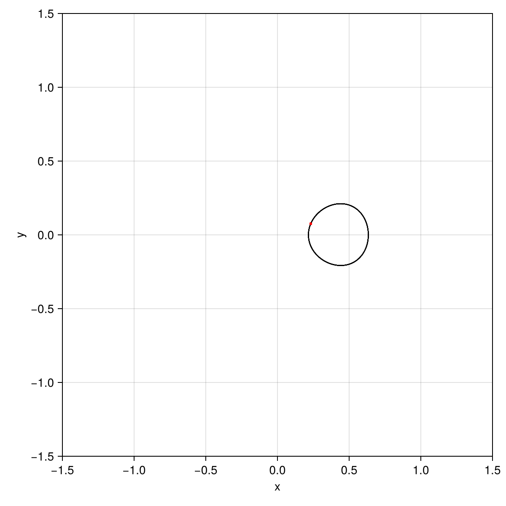
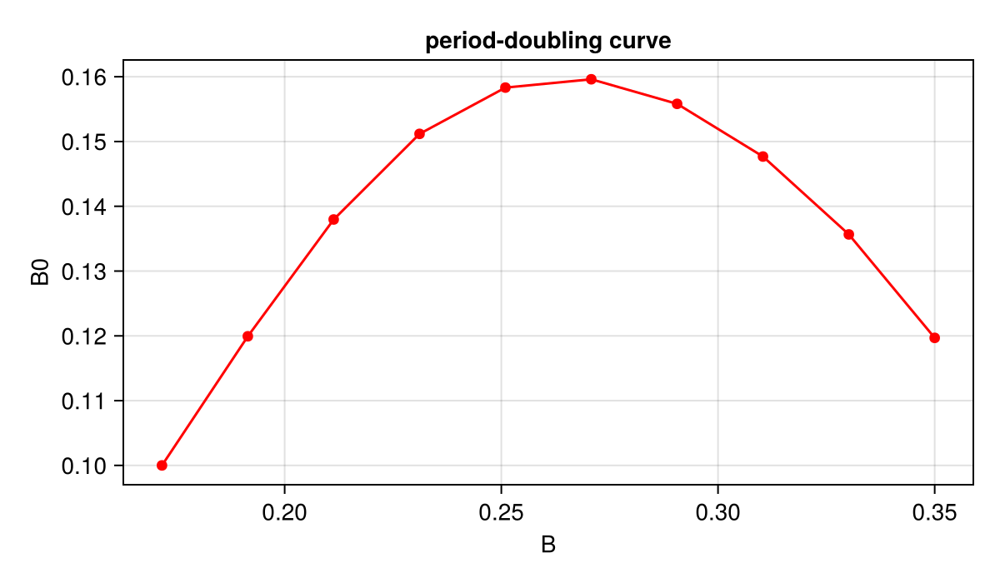
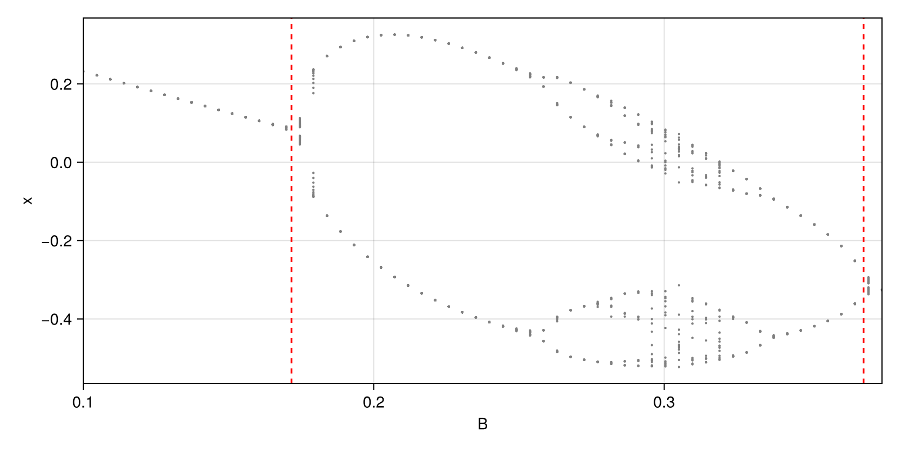

Forced Duffing oscillator
The non-autonomous Duffing equation
\[\dot x = y, \qquad \dot y = -k y - x^3 + B_0 + B \cos t\]
is made autonomous by adding time as a third state variable $t$. The stroboscopic Poincaré map $(x, y) \to (x, y)$ after one forcing period is built from four modes (Miino 2024):
p(2 → 3): lift the section point to $(x, y, 0)$;duffing(3 → 3): integrate until the border $t = 2\pi$;t_reset(3 → 3): reset $t$ to 0;pinv(3 → 2): project back onto $(x, y)$.
Python counterpart: examples/duffing.py of mappy-ds.
using MappyDS, CairoMakie, StaticArrays
using MappyDS: image # Makie exports an `image` plot function as well
duffing = VectorField(3; name = :duffing) do y, p
x, v, t = y
return SVector(v, -p.k * v - x^3 + p.B0 + p.B * cos(t), one(t))
end
poin_sec = Border((y, _) -> y[3] - 2pi, 3; direction = 1, name = :poin_sec)
t_reset = Mapping((y, _) -> y - SVector(0, 0, 2pi), 3; name = :t_reset)
lift = Mapping((y, _) -> SVector(y[1], y[2], zero(y[1])), 2, 3; name = :lift)
project = Mapping((y, _) -> SVector(y[1], y[2]), 3, 2; name = :project)
pmap = PoincareMap(
[
ContinuousMode(:duffing, duffing; borders = (poin_sec,), reltol = 1.0e-8, abstol = 1.0e-10),
DiscreteMode(:t_reset, t_reset),
DiscreteMode(:p, lift),
DiscreteMode(:pinv, project),
],
Dict(:p => :duffing, :duffing => [:t_reset], :t_reset => :pinv, :pinv => :p),
:p,
)
params = (k = 0.2, B0 = 0.1, B = 0.1)
y0 = [0.232147751858, 0.075591687407]2-element Vector{Float64}:
0.232147751858
0.075591687407Orbit
plot2d with a fixed number of frames draws the trajectories (grey) and the image points on the section (red):
config = PlotConfig(; xlim = (-1.5, 1.5), ylim = (-1.5, 1.5), xlabel = "x", ylabel = "y", param_keys = [:B0, :B])
plot2d(pmap, y0, params, config; frames = 50, show = false)
With GLMakie the figure keeps iterating; click to restart from a new initial point, p switches between B0 and B and the up/down keys change the selected parameter.
using GLMakie
plot2d(pmap, y0, params, config)Period-one point and its period doublings
For $k = 0.2$, $B_0 = 0.1$ the 1-periodic point loses stability through period-doubling bifurcations at $B \approx 0.171687$ and $B \approx 0.368655$. The point is found at $B = 0.1$, continued towards the first bifurcation, which find_local_bf then locates exactly:
cycle = find_cycle(pmap, y0, params)
println("1-periodic point at B = $(params.B): $(cycle.y)")
steps = trace_cycle(pmap, cycle.y, params, :B, 0.17; resolution = 10)
last1 = steps[end]
println("traced to B = $(last1.params.B); multipliers $(last1.info[:eigvals])")
bf1 = find_local_bf(pmap, last1.y, last1.params, :B, pi)
println("period doubling #1 at B = $(bf1.params.B), y = $(bf1.y)")1-periodic point at B = 0.1: [0.23214761155186928, 0.07559158224737013]
traced to B = 0.17; multipliers ComplexF64[-0.9741584431229657 + 0.0im, -0.2921593964905629 + 0.0im]
period doubling #1 at B = 0.17168758535774492, y = [0.08386459595579984, 0.09277723431544789]Past the bifurcation the point is a saddle; natural-parameter continuation follows it anyway, up to the second period doubling:
steps2 = trace_cycle(pmap, last1.y, last1.params, :B, 0.36; resolution = 20)
last2 = steps2[end]
println("traced to B = $(last2.params.B); multipliers $(last2.info[:eigvals])")
bf2 = find_local_bf(pmap, last2.y, last2.params, :B, pi)
println("period doubling #2 at B = $(bf2.params.B), y = $(bf2.y)")
reference_pd = (0.171687, 0.368655)
for (got, ref) in zip((bf1.params.B, bf2.params.B), reference_pd)
println("check: B = $(round(got; digits = 6)) vs reference $ref -> ", abs(got - ref) < 1.0e-5 ? "OK" : "MISMATCH")
endtraced to B = 0.36; multipliers ComplexF64[-1.1901883099478514 + 0.0im, -0.23912984258457048 + 0.0im]
period doubling #2 at B = 0.3686546472253591, y = [-0.30977779561554253, 0.14187456888846006]
check: B = 0.171688 vs reference 0.171687 -> OK
check: B = 0.368655 vs reference 0.368655 -> OKPeriod-doubling curve
trace_local_bf continues the first bifurcation point in the $(B, B_0)$ plane:
curve = trace_local_bf(pmap, bf1.y, bf1.params, :B0, bf1.theta, :B, 0.35; resolution = 10)
println("period-doubling curve ($(length(curve)) points):")
println(" B B0")
for s in curve
println(" $(round(s.params.B; digits = 5)) $(round(s.params.B0; digits = 5))")
endperiod-doubling curve (10 points):
B B0
0.17169 0.1
0.1915 0.11993
0.21131 0.13796
0.23113 0.15118
0.25094 0.15832
0.27075 0.15961
0.29056 0.15581
0.31038 0.14768
0.33019 0.13566
0.35 0.11969fig = Figure(; size = (600, 350))
ax = Axis(fig[1, 1]; xlabel = "B", ylabel = "B0", title = "period-doubling curve")
lines!(ax, [s.params.B for s in curve], [s.params.B0 for s in curve]; color = :red)
scatter!(ax, [s.params.B for s in curve], [s.params.B0 for s in curve]; color = :red)
fig
Bifurcation diagram
Sweeping $B$ over $[0.1, 0.375]$ and recording $x$ on the section after a transient gives the one-parameter bifurcation diagram (Miino 2024, Fig. 8, top). The two period doublings bound the window where the 1-periodic point is unstable. Every point is one period of the ODE, so the sweep is kept coarse here.
function bifurcation_diagram(map, params, b_values, frames)
transient = frames ÷ 4
xs = Matrix{Float64}(undef, frames - transient, length(b_values))
y = y0
for (k, b) in enumerate(b_values)
p = merge(params, (B = b,))
for i in 1:frames
y = image(map, y, p)
i > transient && (xs[i - transient, k] = y[1])
end
end
return xs
end
b_values = range(0.1, 0.375; length = 60)
xs = bifurcation_diagram(pmap, params, b_values, 40)
fig = Figure(; size = (800, 400))
ax = Axis(fig[1, 1]; xlabel = "B", ylabel = "x", limits = (0.1, 0.375, nothing, nothing))
scatter!(ax, repeat(collect(b_values); inner = size(xs, 1)), vec(xs); markersize = 3, color = :gray)
vlines!(ax, collect(reference_pd); color = :red, linestyle = :dash)
fig
This page was generated using Literate.jl.